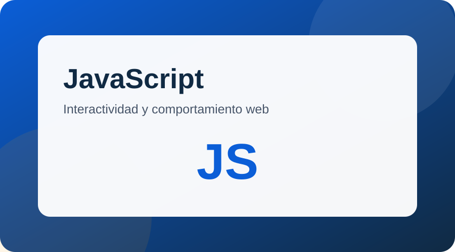
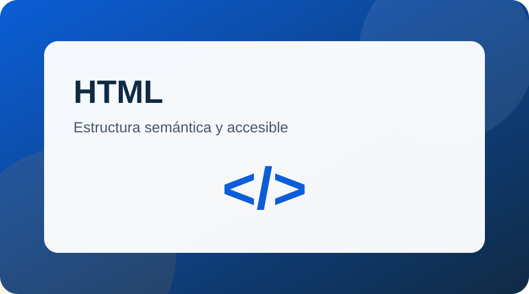

Aprender JavaScript
JavaScript permite convertir una página estática en una experiencia interactiva. En esta sección se aplican conceptos básicos del lenguaje mediante ejemplos prácticos.

Conceptos fundamentales
String: representa texto. Number: representa números. Boolean: trabaja con verdadero o falso. También existen undefined, null, Symbol y BigInt.
JavaScript es un lenguaje multiparadigma: permite trabajar con programación imperativa, funcional y orientada a objetos. En el navegador se ejecuta mediante un motor JavaScript y puede modificar el contenido, estilos y comportamiento de una página.
JavaScript en este sitio
Las prácticas de esta página muestran situaciones habituales del desarrollo web: mostrar mensajes, validar información antes de enviarla, consultar la fecha y hora, controlar elementos visibles, recorrer una galería, cambiar el tema visual y presentar un resumen de datos.
Video: JavaScript y desarrollo web
Presentación breve de las tecnologías utilizadas en el sitio.
Mensajes
Al cargar la página se muestra un saludo y también podés ejecutarlo nuevamente.
Validación de formulario
Fecha y hora
Fecha:
Hora:
Menú interactivo
Galería interactiva
